Our Current Groups
Local Events
Discover and connect with our vibrant community through local events. From workshops to social gatherings, find opportunities to engage, learn, and build meaningful connections.
Sunstone Inclusivity Network
At Sunstone Inclusivity Network, we believe true belonging is built by the community, for the community. Our mission is to create intentionally inclusive spaces, events, groups, and clubs throughout Southern Colorado; Where everyone, especially those from marginalized communities, can thrive, connect, and lead.
We center LGBTQ+ individuals, people with disabilities, and communities of color, ensuring that our spaces are not just welcoming but actively designed with equity, accessibility, and intersectionality in mind. We challenge outdated systems of exclusion and build new models of community care, empowerment, and joy.
Sunstone represents resilience, warmth, and illumination. These are values that guide our work as we forge a world where every person in Southern Colorado can show up authentically, be celebrated, and have a voice in shaping the future.
We're not just inclusive. We are transformative
What Sets Sunstone Inclusivity Network Apart
At Sunstone Inclusivity Network, we don't just advocate for marginalized communities; we empower them to lead, build, and reclaim space. Here's what makes us different:
We don't just include. We disrupt, reimagine, and rebuild.
Support Our Mission
Your donation helps us continue to provide inclusive spaces and resources. Thank you for your support!
Join Our Community
Connect with like-minded individuals and be a part of our growing network!